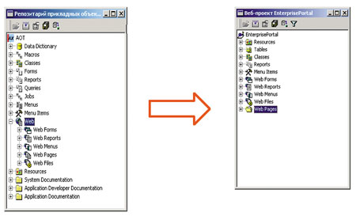
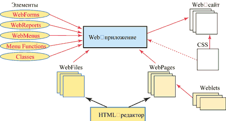
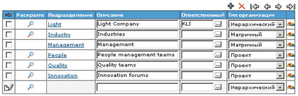
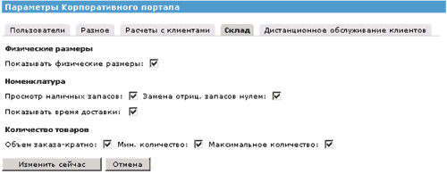

Современная информационная система не может считаться полноценной, если она не предоставляет пользователям средства удаленного доступа к своим ресурсам и бизнес-логике. Средства для разработки Web-приложений появились в Axapta достаточно давно. Однако реализация корпоративного портала в новой версии Axapta 3.0 расширила их возможности и способствовала появлению большого набора готовых компонентов для интеграции с внешними приложениями.
Корпоративный портал - это комплексное серверное Web-приложение, которое позволяет компаниям обмениваться информацией и предоставляет различные сервисы сотрудникам, клиентам и поставщикам. Портал оптимизирует рабочие процессы, связанные с обращением к данным из ERP-системы. Пользователи могут мгновенно подключаться к сервисам и данным системы, используя только Интернет и стандартный Web-браузер.
Но ни один стандартный набор функциональных возможностей, каким бы совершенным он ни был, не может удовлетворить всех потребностей, тем более на протяжении длительного времени. Поэтому рано или поздно большинству компаний приходится начать собственную Web-разработку. Но в настоящее время создать даже простое Web-приложение все еще непросто: необходимо владение хотя бы одним из объектно-ориентированных языков программирования и языками SQL, XML и HTML, а также умение применять множество моделей программирования и т. п. Продукт Microsoft Business Solutions-Axapta облегчает задачу: здесь есть собственная среда разработки, позволяющая создавать приложения как для Windows, так и для Web. Причем эти приложения могут использовать единую модель данных, единый исходный код, единые средства визуального программирования. Различаются приложения только пользовательским интерфейсом: обычное приложение использует Windows-интерфейс, Web-приложение - интерфейс браузера.
Web-приложения
Приложения обоих типов создаются в единой среде разработки Microsoft Business Solutions-Axapta, представленной в виде иерархического дерева (AOT), которое состоит из различных объектов системы (таблиц, классов, форм, отчетов и т. д.).
Web-приложений может быть несколько. Каждое из них строится на основе Web-проекта, который, в свою очередь, представляет собой просто набор обычных объектов системы или их Web-версий (рис. 1).
|  |
| Рис. 1. Разработка Web-приложения ведется на основе базовых объектов, хранящихся в репозитарии.
|
Новый Web-проект можно создать на основе шаблона или просто путем дублирования существующего проекта. Такой проект обычно состоит из трех основных частей - обычных объектов системы или их Web-версий (элементы AOT), Web-страниц и Web-файлов.
Схема взаимодействия элементов, входящих в Web-проект, приведена на рис. 2.
|  |
| Рис. 2. Схема взаимодействия компонентов Web-проекта.
|
Обычно Web-файлы являются общими для всех Web-приложений. Они хранятся внутри дерева AOT и могут быть модифицированы с помощью встроенного HTML-редактора. По месту обработки содержащегося в них кода их можно разделить на серверные и клиентские. Клиентские файлы содержат Java-сценарий, который выполняется браузером. Серверные файлы представляют собой страницы ASP, предназначенные для установления связи между Web-сервером и Axapta через модуль Axapta Business Connector. Эти файлы копируются на сервер во время развертывания Web-сайта.
Axapta Business Connector объединяет два компонента - Axapta COM Connector и Axapta Internet Connector. Так как Axapta COM Connector - это COM-объект (небольшая библиотека DLL), его можно вызвать из любого приложения, поддерживающего COM-технологию для доступа к бизнес-логике Axapta.
Axapta Internet Connector - это набор системных классов Axapta (IISServer, IISResponse, IISRequest и т. д.), предназначенных для управления Web-сервером IIS из кода системы Аxapta. Таким образом, Axapta Business Connector обеспечивает полную интеграцию с Web-сервером.
Данная технология покрывает почти все функции, за исключением тех, что связаны с управлением графическим интерфейсом, т. е. построением и размещением HTML-форм, отчетов, меню и т. д. В принципе все это можно делать из других сред разработки, получая информацию из Axapta посредством Axapta Business Connector. Но было бы удобнее делать это из среды Axapta, причем таким же образом, как и при работе с обычными приложениями. В системе это достигается посредством AOT-элементов и Web-страниц.
Как уже упоминалось выше, AOT-элементы - это обычные объекты системы, которые могут одновременно использоваться в приложениях как для Windows, так и для Web (исключение составляют лишь Web-формы). Именно эти элементы выполняют функции графического интерфейса, управляя открытием форм, отчетов, отображая внутреннюю информацию.
Web-страницы предоставляют широкие возможности для разработки, компоновки и оформления сайта. Как и Web-файлы, страницы хранятся в AOT и могут быть созданы или отредактированы с помощью встроенного HTML-редактора. Основная их задача - отделить код HTML от используемого в Axapta программного кода X++. В отличие от обычного HTML-файла, создаваемого, скажем, с помощью Microsoft FrontPage, Web-страница в системе Axapta может содержать специфические элементы системы (WebForms, WebMenus, WebReport, Images, Labels и т. д.). Все эти элементы помещаются на Web-страницу посредством механизма Weblets - набора классов, который содержит информацию о специфическом элементе. Информация из Weblets позволяет HTML-редактору отображать конкретный элемент при создании Web-страницы.
С помощью шаблона стилей (CSS) легко настроить внешний вид сайта. Шаблоны стилей создаются и редактируются с помощью встроенного специального редактора. Изменение шрифта или цвета в шаблоне стилей будет немедленно отражено на всех страницах сайта. После создания Web-проекта можно легко развернуть сайт с помощью соответствующего мастера.
Мастер создания Web-приложений позволяет развернуть сайт в пошаговом режиме. На первом шаге нужно выбрать один из существующих Web-проектов, затем определить необходимую конфигурацию системы. Далее можно задать расположение и язык сайта, указать необходимость шифрования информации и используемый шаблон стилей. После создания Web-приложения все эти свойства можно изменить на специальной форме, вызываемой из главного меню. На базе одного Web-проекта можно создать несколько Web-приложений. К примеру, одно приложение вы можете использовать для отладки, другое - непосредственно для работы.
Элементы AOT
Основные элементы AOT, входящие в Web-приложение, - это Web-формы, Web-отчеты, Web-меню, функции меню (Web Menu Functions). Из них только Web-формы имеют свой узел в дереве AOT. Это значит, что Web-меню, функции меню и Web-отчеты создаются точно так же, как и стандартные меню и отчеты. Основное их отличие от аналогичных элементов в GUI состоит в том, что они выводят информацию через браузер.
Web Menu Functions
Функции меню играют в Web-приложении столь же важную роль, что и в обычном приложении. Они служат связующим звеном между формами и отчетами. В Web-приложении их роль особенно велика: они могут быть приписаны не только к пунктам меню и элементам управления формы, но и к полям отчета, текстам, меткам, картинкам и т. п. Это дает возможность построить гибкий механизм навигации по сайту.
Web-меню
Web-меню строятся аналогично стандартным меню и располагаются на одной вкладке в структуре АОT. Поэтому одно и то же меню может использоваться как Windows-приложением, так и Web-приложением. Унифицированная настройка прав доступа при этом значительно упрощает администрирование системы. Web-меню представляют собой коллекцию функций меню (Web menu function) и могут иметь три основных представления - горизонтальное, вертикальное и древовидное.
Горизонтальное меню ограничено только одним уровнем вложенности. Для вертикальных и древовидных меню уровень вложенности не ограничивается. Но сказанное не означает, что вы можете иметь только три различных вида меню. Предусмотрено создание нестандартных меню (например, на основе картинок), а также изменение существующих путем внесения изменений в классы WebTreeMenuHTML, WebVertMenuHTML, WebHorzMenuHTML.
Как и другие элементы AOT, Web-меню помещаются на Web-страницу с помощью механизма Weblet (WebMenuWeblet).
Web-отчеты
Все отчеты системы располагаются в AOT на одной вкладке. Это означает, что можно использовать один и тот же отчет как в стандартном приложении Windows, так и в Web-приложении, - в обоих случаях все элементы управления, методы и источники данных будут одинаковыми.
Будучи задействованным, Web-отчет использует системный класс X++ WebReportHTML для генерации кода HTML и его передачи в браузер. Поэтому если обычные отчеты отображаются в стандартном окне предварительного просмотра, то в данном случае система для отображения вызывает методы (StartReport, StartBodySection, WriteField и т. д.) объектов класса WebReportHTML. Web-отчеты поддерживают стандартную технологию AutoJoin системы Axapta, которая позволяет с помощью расширенных типов данных и заранее определенных связей (Relations) между таблицами связывать несколько источников данных без дополнительного программирования. Так, если в системе имеется отчет, отображающий проводки всех клиентов, то при вызове из формы клиентов он отобразит проводки только того клиента, на котором установлен курсор на форме.
Web-отчет, как и обычный отчет, выводит все строки из источника данных. Нельзя ограничить количество строк, выводимых в определенный момент времени. Поэтому если вы имеете дело с большим объемом данных (особенно если речь идет о графике или об интенсивных сложных вычислениях), то может возникнуть проблема с производительностью. В этом случае вам лучше воспользоваться Web-формой с ее элементом управления WebGrid.
Web-формы
Web-форма - основной графический элемент, дающий пользователю возможность вводить и модифицировать данные. При этом изменения сразу же становятся доступными всем пользователям, присоединенным к базе данных. Во многом Web-форма похожа на обычную форму системы - она строится по сходным принципам и использует похожие элементы управления. Но есть и два существенных отличия. Во-первых, обычная форма использует интерфейс Windows и полностью контролируется операционной системой, в то время как Web-форма обрабатывается браузером, который имеет совершенно другую архитектуру, иерархию событий и интерфейс. Во-вторых, обычная форма обрабатывается на клиенте, а Web-форма - на Web-сервере. Это значит, что при ее использовании вы не можете обработать события, связанные с мышью (MouseOver, MouseMove, GotFocus) или с нажатием клавиш на клавиатуре.
В конечном счете Web-форма может рассматриваться как поток HTML, который отображается в Web-браузере. Как и обычная форма, Web-форма основывается на одном или нескольких источниках данных. Работа с источниками данных осуществляется здесь таким же образом, как и в Windows-приложениях.
Конечно, Web-форма имеет отличный от своего Windows-аналога набор элементов управления - обычная форма Axapta использует гораздо более богатый набор стандартных элементов управления Windows, в то время как Web-форма ограничена стандартным ассортиментом средств HTML. Элементы управления размещаются на Web-форме, как и на обычной форме, с использованием групп.
Наиболее интересные элементы управления - WebGrid и WebTab, используемые почти на каждой форме в системе. WebGrid - это набор строк из таблицы, заданной в источнике данных формы. С помощью свойства VisibleRows можно ограничить количество отображаемых строк; по умолчанию отображается 10 строк (рис. 3).
|  |
| Рис. 3. Работа с Web-формой.
|
WebGrid имеет шесть предопределенных команд, отображаемых в виде кнопок в верхней части элемента управления, которые позволяют передвигаться по строкам, удалять и добавлять новые строки. Данные кнопки можно скрывать и показывать непосредственно из кода X++, что делает более гибким процесс ввода информации в форму.
Механизм WebTab, с помощью которого на форме отображается набор вкладок, ничем не отличается от аналогичного механизма в интерфейсе Windows (рис. 4).
|  |
| Рис. 4. Форма с несколькими вкладками.
|
Как и в Windows-приложении, набор вкладок здесь создается путем помещения элемента WebTabPage на элемент WebTab. Но следует отметить, что элемент управления WebTab, в отличие от своего Windows-аналога, имеет свойство ServerSideControl. Если активизировать это свойство, то выполнение данного элемента будет осуществляться внутри Axapta, а такие методы, как tabChanged, окажутся "перекрытыми".
Редактор Web-страниц
Редактор Web-страниц - основной инструмент для создания и редактирования графического интерфейса сайта. Он позволяет создавать и редактировать страницы, в частности, перетаскивая картинки, элементы AOT и WebLets в ячейки таблиц HTML. В дереве приложений имеется много примеров Web-страниц, которые могут использоваться в качестве шаблонов. Использование WebLets позволяет помещать на Web-страницу не только специфические элементы Axapta, но и другие Web-страницы. Это полезно, когда несколько страниц имеют сходное содержание. Изменения, сделанные на общей странице, немедленно отразятся на всех страницах, в которые она входит.
HTML-редактор в системе Axapta очень похож на хорошо известный инструмент Microsoft FrontPage, поэтому научиться работать с ним не составляет большого труда.
Weblets
Элементы Weblets играют центральную роль в разработке Web-приложений. С точки зрения Axapta, Weblets - это просто класс X++, являющийся наследником системного класса WebLet.
Наследники этого класса используются в том случае, когда вы хотите создать и вывести HTML-код из Axapta. Это значит, что почти все модули, связанные с генерацией HTML-кода, должны иметь собственных наследников класса WebLet. К примеру, элемент WebFormWeblet служит для отображения Web-формы, WebReportWeblet - для отображения Web-отчета, WebImageWeblet - для управления отображением картинок, хранимых в базе данных Axapta. Весьма логично предположить, что WebLets могут размещаться в любом месте Web-страницы и работать как в режиме разработки, так и в режиме выполнения.
Режим разработки используется во время создания или редактирования Web-страниц в описанном ранее редакторе. Метод designView используется редактором для генерации HTML-кода, который будет выведен в редактор.
В режиме выполнения метод run посылает HTML-код для его отображения в браузере. Объект WebLet имеет собственный набор свойств. Новые свойства можно создать путем перекрытия метода createProperties у класса-наследника. С помощью свойств можно управлять отображением конкретного элемента WebLet при его отображении в редакторе или браузере. В системе Axapta уже создано много элементов WebLet, но наиболее часто используются WebAppEngineWebLet(WebTarget) и WebErrorHandleWeblet(ErrorHandler).
WebTarget
Web-меню, их функции, большинство Web-форм и Web-отчетов имеют свойство WebTarget. Оно определяет, какой объект WebAppEngineWebLet будет управлять отображением соответствующего элемента. На одну Web-страницу вы можете вставить несколько элементов WebAppEngineWebLet, разместив их в любом подходящем месте. Основные свойства WebAppEngineWebLet - DefaultEngine, WebPageInclude, HandleMenu, HandleReport и HandleForm.
DefaultEngine активизируется только для того WebApplEngineWeblet, который будет использоваться по умолчанию для всех элементов управления, размещенных на странице, у которых не указано свойство WebTarget.
WebPageInclude задает имя той Web-страницы из проекта, которая будет отображена при первом вызове элемента управления, ссылающегося на данный WebLet.
HandleMenu, HandleReport и HandleForm определяют, может ли данный WebLet управлять соответственно Web-меню, Web-отчетами и Web-формами.
ErrorHandler
Вполне вероятна ситуация, при которой пользователь вводит ошибочную информацию (например, неправильный пароль). Класс ErrorHandler легко обрабатывает такие ситуации, записывая нужную информацию в InfoLog в случае программных или пользовательских ошибок. Свойства данного класса позволяют определить, какой тип информации будет передан в Web-браузер. Это могут быть информационные или предупреждающие сообщения, коды ошибки, а также любая их комбинация. Конкретное положение данного элемента WebLet на Web-странице не имеет значения, но его присутствие желательно на каждой странице.
Поиск информации на Web-сайте и безопасность
В Web-приложении Axapta разработчик может помочь пользователю быстро находить необходимые тому данные, определив таблицы и поля, которые будут участвовать в процессе поиска.
Поскольку пользователи обращаются к системе через Web-сайт, очень актуальной становится проблема защиты информации, хранящейся в базе данных. Кроме того, необходимо разграничивать уровни доступа к бизнес-логике системы в зависимости от того, кто хочет пользоваться системой.
Для управления уровнем доступа в системе введено понятие Web-пользователей. Для каждого пользователя можно определить набор стандартных ролей, которые позволяют ему входить в ту или иную часть системы в зависимости от специфики его работы. Эти роли разделены на три внутренние (работник, продавец, консультант) и две внешние (клиент, поставщик). Кроме того, каждому Web-пользователю должен быть сопоставлен обычный пользователь системы. Эта привязка дает возможность использовать те же настройки системы безопасности, что и в обычном приложении. Все или некоторые операции, выполняемые пользователями через Web-сайт, могут выполняться с помощью технологии SSL. Это означает, что информация, которой обмениваются браузер и сайт, будет зашифрована.
Заключение
Для пользователя, знакомого с разработкой в системе Microsoft Business Solutions-Axapta, процесс создания нового Web-приложения или модификации существующего не будет сложным, так как приложения для Web и для Windows используют сходные объекты и строятся по единым принципам. Возможность создания и редактирования Web-страниц непосредственно из системы позволяет размещать на сайте любые элементы графического интерфейса, имеющиеся в системе. Посредством класса Weblet можно создавать свои собственные элементы, которые легко могут быть интегрированы с Web-страницей и Web-приложением.